Improving Water Infrastructure in Santa Estefanía, Ecuador
Santa Estefanía is a community of about 140 people on the far bank of the Napo River in Ecuador’s Amazon. They have a water source, but the system that carries it is a 10-year-old exposed hose with no treatment, no taps and no meters. Our EWB team is helping the community redesign it. My part has been rainwater catchment and storage for a community pavilion. In Spring 2025 I led the design of a scale model of its catchment system. In Fall 2025 I helped size its storage tanks with a daily mass-balance model, built on a Python pipeline I wrote to pull 25 years of NOAA rainfall data.
The Community
Most families grow cocoa and corn, mainly to eat themselves. Others earn money ferrying people across the river or working as day laborers. There is a school and most houses have electricity, but there is no health center. The most common health problems are malnutrition, flu, diarrhea and parasitic stomach infections. Cell signal is unreliable, so we coordinate with community leaders over WhatsApp. The community is well organized, with its own water board, and it is working to legally register both the community and the board.
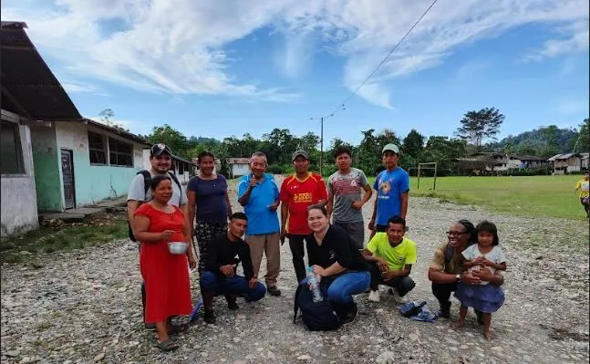
Climate notes (nearest station: Tena, ~1 hr by car)
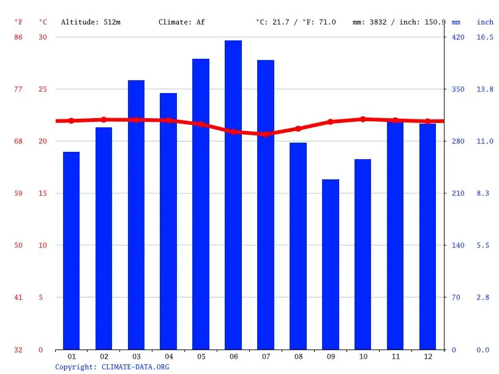
- Average temperature: 22.0 °C (71.6 °F). Annual precipitation: ~3,830 mm (150.8 in).
- Wettest by rain days: March (27 days). Fewest rain days: August (23).
- Driest month: September, which still gets 228 mm. The June–September dry season has been shifting in recent years.
- Relative humidity ranges from 80% (September) to 85% (June).
The Existing System
The water comes from a spring in a cave-like opening, roughly a 30-minute hike from the center of the community. EWB-Ecuador staff divided the system into three sections for their assessment:
- Catchment. A single ~30 cm reinforced concrete wall acts as a small dam at the cave mouth. There is no concrete floor, so the pooled water is highly turbid and hard to clean. The ~50 m of pipe to the storage tanks rests on fallen tree trunks.
- Conduction line. Water travels ~2 km from the tanks to the community through a 2″ black hose that is completely exposed, and it leaks and degrades. Dense vegetation makes the line hard to inspect.
- Distribution. There are no distribution pipes, only hoses tapped into the main line. There are no taps or meters at the houses and no chlorination, so most families boil their water before drinking it.
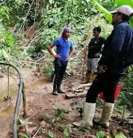
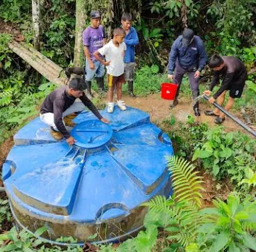
Status of the water system at the original EWB-Ecuador site visit (vetting report, Fig. 5).
Is it a quantity problem?
Not really. The source flow alone is large compared with what the community needs:
That is roughly ten times the 50–100 L per person per day the WHO cites for basic needs. Yet households still run short, because water leaks out of the line and runs unmetered from open hoses, and what does arrive isn’t safe to drink untreated. That reframed our design goals around delivery, storage and water quality rather than finding more water.
EWB-Ecuador’s proposed repairs & tentative costs
| Section | Work | Cost (USD) |
|---|---|---|
| Catchment | Improve catchment to reduce contamination and ease maintenance | $5,200 |
| Replace ~50 m pipe from catchment to storage tank | $1,560 | |
| Add a second 5,000 L storage tank | $1,430 | |
| Conduction | Replace ~2 km line with 90 mm, 0.8 MPa pipe on a lower-loss route | $23,400 |
| Install 10 air valves and 5 flushing valves | $3,250 | |
| Distribution | Replace hoses with 800 m of ¾″ pressure PVC | $3,510 |
| Install 40 ¾″ household water meters | $4,940 | |
| Total (tentative) | $43,290 | |
Source: EWB-Ecuador community vetting report.
Spring 2025: Pavilion Scale Model (SWSS)
The program split into tech groups: mapping (MIST), supplemental water supply & storage (SWSS), community & logistics (CCLG), water health & filtration (WHSS) and water meters (IWHS). I was on SWSS, where I led the design of a scale model of the community pavilion and its rainwater catchment system. In the second week we merged with WHSS, so that the catchment and the filter were designed as a single system. Our semester goals were to:
- Design a rainwater catchment system that supplements the existing supply, based on local rainfall and on materials available in the area.
- Develop storage sized for capacity, durability and ease of use.
- Integrate filtration or treatment so the collected water is safe to drink.
- Produce an implementation plan for building it in the community.
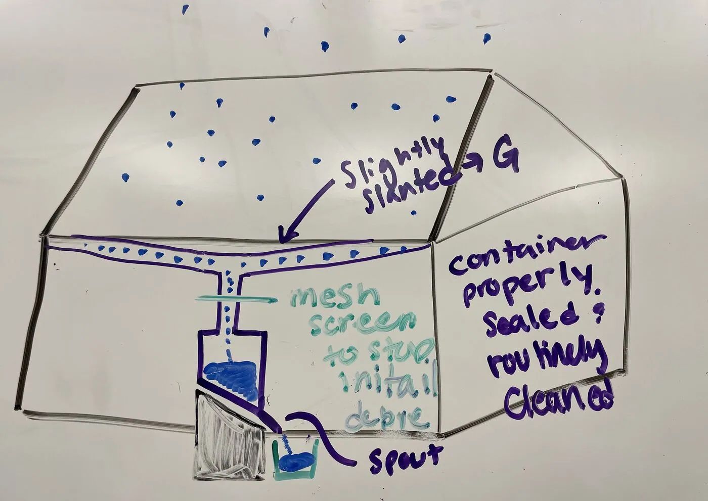
Estimating the rainwater yield
The volume a roof can collect is the rainfall depth, times the roof’s plan area, times a runoff coefficient for losses (splash, evaporation, first-flush diversion). Assuming for a sheet-metal roof:
- Per square meter of roof per year: .
- Per square meter in September, the driest month: .
A 30 m² roof could therefore collect about 92,000 L per year, roughly 250 L/day on average and still about 180 L/day in September. On averages, rain is plentiful. What averages hide is dry spells, which is why we later moved from monthly averages to a daily model (see the RETAIN section).
Building it
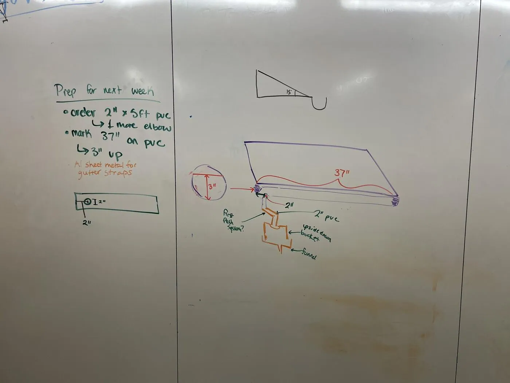
We started with quick low-fidelity tests in Nolop, Tufts’ makerspace, using solo cups, paper cups, straws and hot glue. Then we built a wooden scale model of the pavilion to prototype the system:
- A wooden frame with a plywood roof, glued and then drilled and screwed together.
- We researched optimal roof slopes, calculated the wall cut angles, and set the gutter run 15° above horizontal.
- We cut PVC pipe in half lengthwise for gutters, then added a downspout and elbows, all sealed with caulk.
- A tarp over the roof, a first-flush diverter on the downspout, and a second coat of sealant for waterproofing.
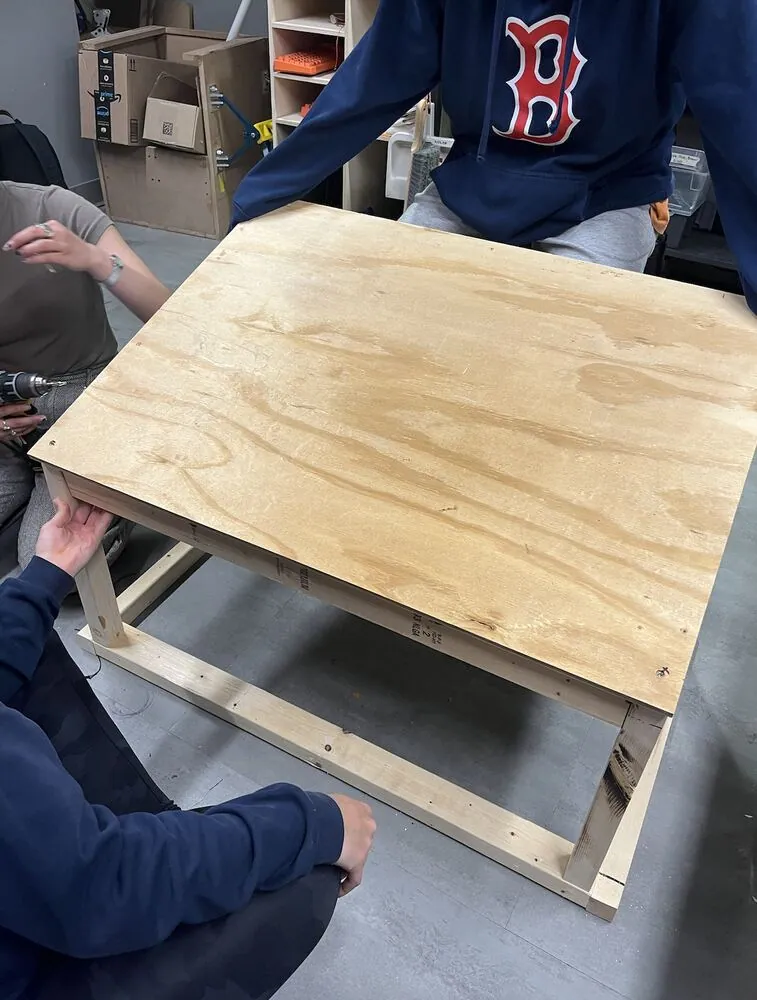
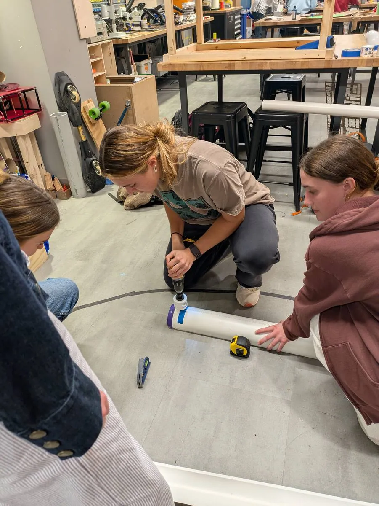
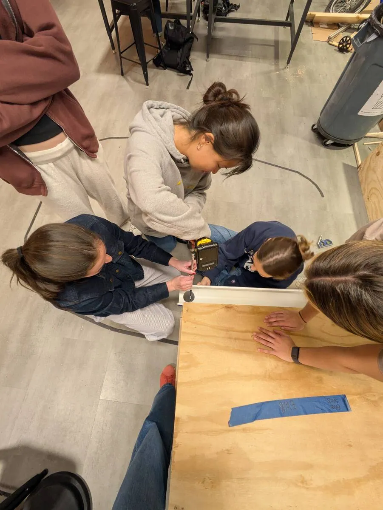
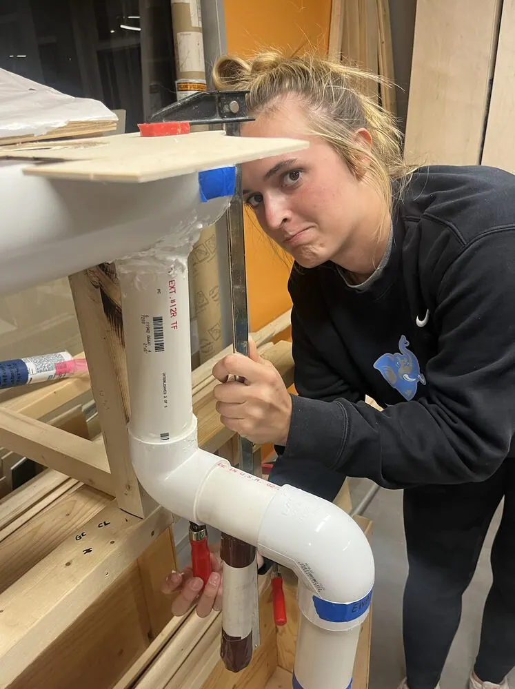
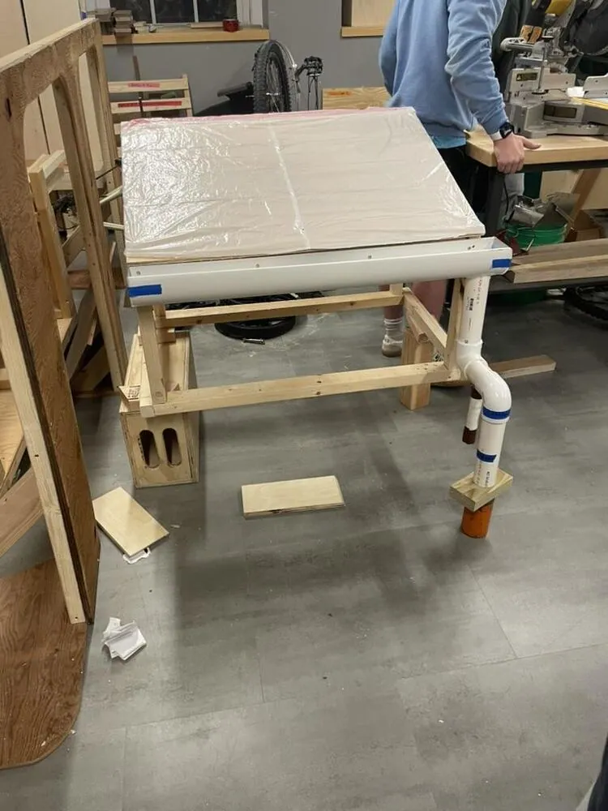
Filtration: first flush + geo-filter
The stream source is heavily loaded with sediment. Chlorine would kill bacteria but wouldn’t remove the sediment, so WHSS designed a two-stage filter that attaches to the downspout:
- First flush. A pre-rinse chamber catches the first water off the roof, which carries dust, debris and droppings, so it never reaches the main filter.
- Geo-filter. A double-bucket system. The top bucket holds layers of gravel, sand and activated charcoal separated by a double layer of mesh. Filtered water collects in the lower bucket, where families draw it from a tap.
Before building the bucket version, we tested the order of the media layers using two nested cups (the “basket method”).
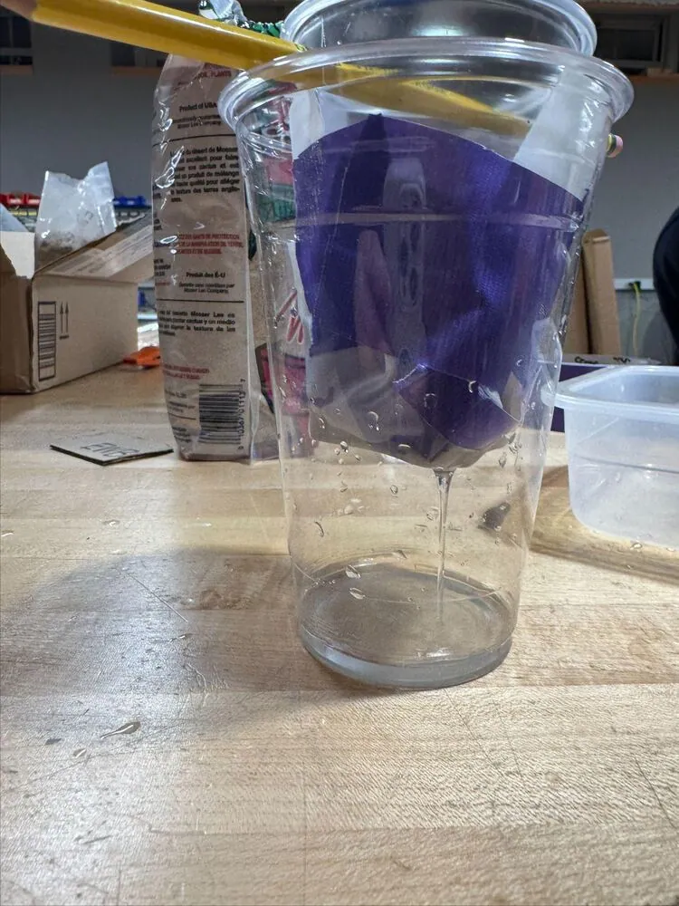
Semester log (SWSS, from team-lead meeting notes)
| Week | Progress |
|---|---|
| Feb 3 | Onboarding and a shared research doc. Joined forces with the filtration group and located the water source in Google Earth Pro. I shared lessons from my greenhouse project. |
| Feb 10 | Formally merged with WHSS. Sketched designs and ran first Nolop tests with cups, straws and hot glue. |
| Feb 17 | Brainstormed catchment ideas and sketched a household system to prototype. Researched filtration. |
| Feb 24 | Researched and listed materials for the prototype. |
| Mar 3 | Finalized the prototype design and drew a more detailed build sketch. |
| Mar 10 | Built the base of the scale model (glued, then drilled and screwed). |
| Mar 24 | Found plywood for the roof, calculated wall cut angles, researched roof slopes, cut pipe at 15°. |
| Mar 31 | Finished the model’s frame. WHSS settled on a charcoal / sand / gravel order with a double mesh layer. |
| Apr 7 | Planned the final build and prepped all cuts. |
| Apr 14 | Attached gutters, drilled for and attached the downspout and elbows, caulked. |
| Apr 21 | Finishing touches: tarp roof, first-flush system, second coat of sealant. |
| Apr 25 | End-of-semester showcase 🎉 |
2025 Assessment Trip
I didn’t travel on either trip. The photos in this section and in the 2026 section were taken by the trip teams. I include them for context, because they show the site conditions our designs have to work in.
The spring design work was shared with the community on the 2025 assessment trip. The trip team hiked the line up to the source, inspected the catchment wall and tanks, and tested water quality at the storage tank.
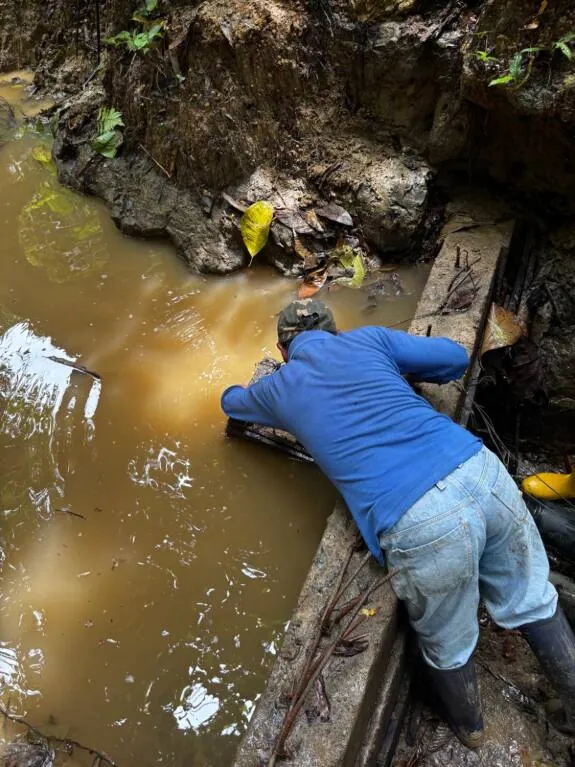
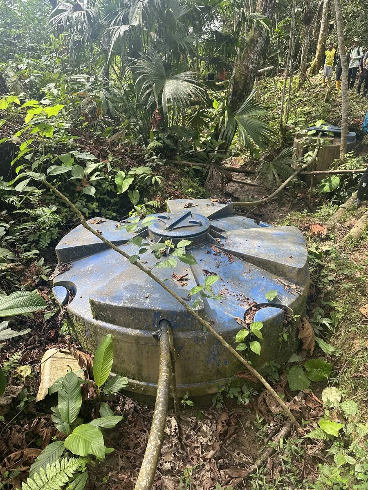
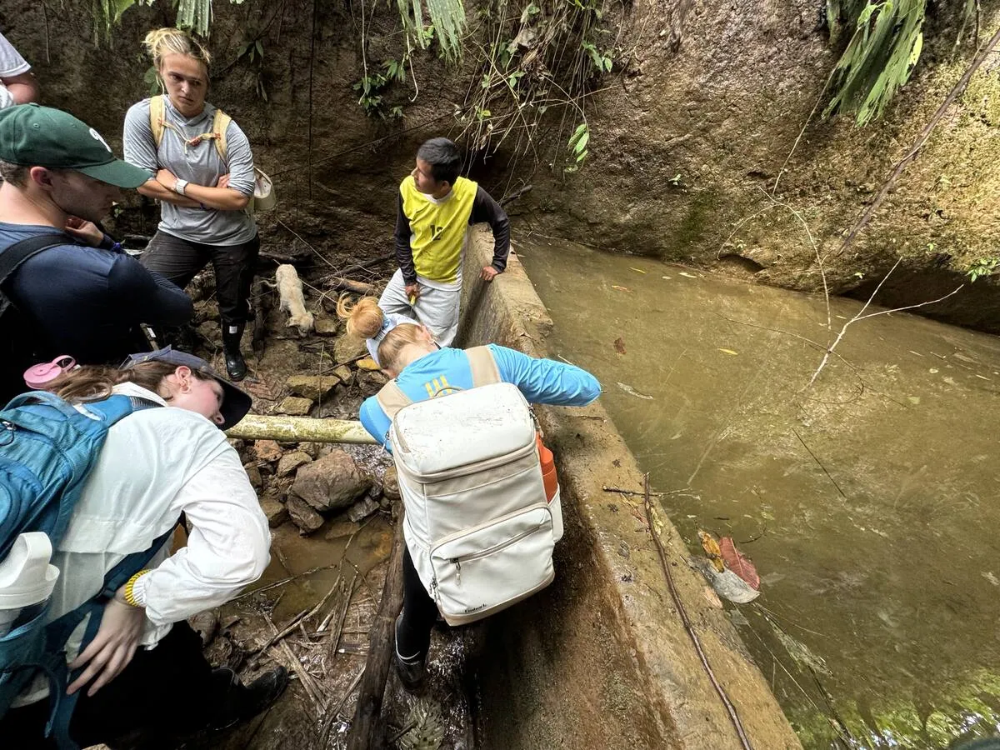
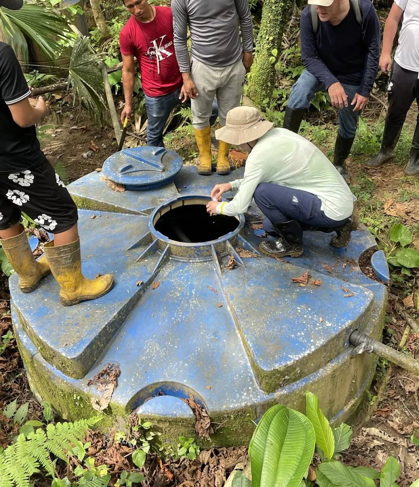
Fall 2025: RETAIN · Sizing Storage for the Pavilion
In Fall 2025 the catchment work continued as RETAIN, a sub-team focused on rainwater catchment and storage tanks. The tech leads set our semester goal at two storage tanks for one large community pavilion. Getting there meant answering a question that averages can’t: how big does the storage have to be to carry the community through dry spells?

Getting the rainfall data
Monthly averages from Tena hide dry spells, so we needed a daily record for the community itself. NOAA publishes global gridded daily precipitation as one netCDF file per year (precip.YYYY.nc), with each file holding a full year of daily values for every grid cell on Earth. I wrote a Python pipeline to turn those files into one time series for Santa Estefanía:
- Find the grid cell. The script locates the latitude and longitude variables, whatever they are named, and picks the grid point nearest the community (−0.9°, −77.3°). It converts the longitude to the dataset’s 0–360° convention (−77.3° → 282.7°).
- Slice, don’t load. It pulls only that cell’s time series out of each 3-D
(time, lat, lon)array, so the output is a few thousand rows instead of millions. - Batch every year. Point it at a folder and it processes every
.ncfile in order, concatenates the years, sorts by time and writes a single CSV. - Into the model. The CSV feeds the Excel mass balance. A second script reads the model’s Daily Running Totals sheet back in and reports the longest shortage in each year.
Code: netcdfs_to_csv.py (netCDF → CSV for one location, all years)
import netCDF4 as nc
import pandas as pd
import numpy as np
from datetime import datetime, timedelta
import os
import glob
nc_file_path = "C:/Users/tag62/OneDrive/Desktop/precip_data"
csv_file_path = "C:/Users/tag62/Downloads/precip_data.csv"
def nc_to_csv(nc_file_path, csv_file_path, variables=None, target_lat=None, target_lon=None):
"""
Convert NetCDF file(s) to CSV format.
Parameters:
-----------
nc_file_path : str
Path to a single NetCDF file OR a folder containing multiple .nc files
csv_file_path : str
Path to the output CSV file
variables : list, optional
List of variable names to extract. If None, extracts all variables.
target_lat : float, optional
Target latitude to extract. Will find nearest grid point.
target_lon : float, optional
Target longitude to extract. Will find nearest grid point.
"""
# Check if input is a folder or a single file
if os.path.isdir(nc_file_path):
nc_files = sorted(glob.glob(os.path.join(nc_file_path, '*.nc')))
if not nc_files:
print(f"No .nc files found in folder: {nc_file_path}")
return None
print(f"Found {len(nc_files)} NetCDF files in folder")
print("Files will be processed in order:")
for f in nc_files:
print(f" - {os.path.basename(f)}")
print()
else:
nc_files = [nc_file_path]
# Process each file and collect all rows
all_rows = []
time_units, time_calendar = None, 'standard'
for file_idx, nc_file in enumerate(nc_files):
print(f"\n{'='*60}")
print(f"Processing file {file_idx + 1}/{len(nc_files)}: {os.path.basename(nc_file)}")
print(f"{'='*60}")
rows_from_file, file_units, file_calendar = process_single_nc_file(
nc_file, variables, target_lat, target_lon, show_full_info=(file_idx == 0))
all_rows.extend(rows_from_file)
# Every yearly file should share one time convention; warn if not.
if time_units is None:
time_units, time_calendar = file_units, file_calendar
elif file_units != time_units:
print(f"Warning: {os.path.basename(nc_file)} uses time units '{file_units}', "
f"expected '{time_units}'")
print(f"Extracted {len(rows_from_file)} rows from this file")
print(f"\n{'='*60}")
print(f"TOTAL ROWS COLLECTED: {len(all_rows)}")
print(f"{'='*60}\n")
# Create DataFrame from all collected rows
df = pd.DataFrame(all_rows)
# Sort by time if time column exists
if 'time' in df.columns:
df = df.sort_values('time').reset_index(drop=True)
# Convert time values to readable dates using the file's own time units
if 'time' in df.columns:
if time_units:
print(f"Converting time values to dates (units: '{time_units}')...")
dates = nc.num2date(df['time'].values, units=time_units, calendar=time_calendar,
only_use_cftime_datetimes=False,
only_use_python_datetimes=True)
df['datetime'] = pd.to_datetime(dates)
print(f"First date: {df['datetime'].iloc[0]}")
print(f"Last date: {df['datetime'].iloc[-1]}")
else:
print("Time variable has no 'units' attribute; time values left as numbers")
# Save to CSV
df.to_csv(csv_file_path, index=False)
print(f"Successfully saved combined data to {csv_file_path}")
print(f"Output shape: {df.shape}")
return df
def process_single_nc_file(nc_file_path, variables=None, target_lat=None, target_lon=None, show_full_info=True):
"""
Extract rows from one NetCDF file (optionally at a single grid point).
Parameters:
-----------
nc_file_path : str
Path to the input NetCDF file
variables : list, optional
List of variable names to extract. If None, extracts all variables.
target_lat : float, optional
Target latitude to extract. Will find nearest grid point.
target_lon : float, optional
Target longitude to extract. Will find nearest grid point.
"""
# Open the NetCDF file
dataset = nc.Dataset(nc_file_path, 'r')
# Print dataset information
print("=" * 60)
print("NETCDF DATASET INFORMATION")
print("=" * 60)
print("\nDimensions:")
for dim_name, dim in dataset.dimensions.items():
print(f" {dim_name}: {len(dim)}")
print("\nVariables:")
for var_name, var in dataset.variables.items():
print(f" {var_name}:")
print(f" Shape: {var.shape}")
print(f" Dimensions: {var.dimensions}")
print(f" Data type: {var.dtype}")
if hasattr(var, 'long_name'):
print(f" Description: {var.long_name}")
if hasattr(var, 'units'):
print(f" Units: {var.units}")
print("\n" + "=" * 60)
print("Available variables:", list(dataset.variables.keys()))
print("=" * 60 + "\n")
# If no variables specified, use all non-dimension variables
if variables is None:
# Filter out coordinate/dimension variables
dimensions = set(dataset.dimensions.keys())
variables = [var for var in dataset.variables.keys()
if var not in dimensions or len(dataset.variables[var].dimensions) > 1]
# Find nearest lat/lon indices if specified
lat_idx, lon_idx = None, None
actual_lat, actual_lon = None, None
if target_lat is not None or target_lon is not None:
print("\n" + "=" * 60)
print("FILTERING BY LOCATION")
print("=" * 60)
# Try to find latitude variable (various naming conventions)
lat_var_name = None
for name in ['lat', 'latitude', 'LAT', 'LATITUDE', 'y', 'Y']:
if name in dataset.variables:
lat_var_name = name
break
# Try to find longitude variable
lon_var_name = None
for name in ['lon', 'longitude', 'LON', 'LONGITUDE', 'x', 'X']:
if name in dataset.variables:
lon_var_name = name
break
if target_lat is not None and lat_var_name:
lats = dataset.variables[lat_var_name][:]
lat_idx = np.abs(lats - target_lat).argmin()
actual_lat = float(lats[lat_idx])
print(f"Target latitude: {target_lat}°")
print(f"Nearest grid point: {actual_lat}° (index {lat_idx})")
print(f"Using latitude variable: '{lat_var_name}'")
if target_lon is not None and lon_var_name:
lons = dataset.variables[lon_var_name][:]
# Handle longitude wrapping (0-360 vs -180 to 180)
if target_lon < 0 and lons.min() >= 0:
target_lon_adjusted = target_lon + 360
print(f"Adjusting longitude from {target_lon}° to {target_lon_adjusted}° (0-360 range)")
lon_idx = np.abs(lons - target_lon_adjusted).argmin()
else:
lon_idx = np.abs(lons - target_lon).argmin()
actual_lon = float(lons[lon_idx])
print(f"Target longitude: {target_lon}°")
print(f"Nearest grid point: {actual_lon}° (index {lon_idx})")
print(f"Using longitude variable: '{lon_var_name}'")
print("=" * 60 + "\n")
# List to store all rows
all_rows = []
# Extract each variable
for var_name in variables:
if var_name in dataset.variables:
var = dataset.variables[var_name]
var_data = var[:]
# Handle multi-dimensional arrays
if var_data.ndim > 1:
print(f"Processing {var_name} with shape {var_data.shape}")
print(f" Dimensions: {var.dimensions}")
# Get coordinate variables
dim_names = var.dimensions
coords = {}
for dim in dim_names:
if dim in dataset.variables:
coords[dim] = dataset.variables[dim][:]
else:
# Create indices if coordinate variable doesn't exist
coords[dim] = np.arange(dataset.dimensions[dim].size)
# Map dimension names to standard names for filtering
dim_name_map = {}
for dim in dim_names:
if dim.lower() in ['lat', 'latitude', 'y']:
dim_name_map['lat'] = dim
elif dim.lower() in ['lon', 'longitude', 'x']:
dim_name_map['lon'] = dim
# Slice data if lat/lon filtering is requested
if lat_idx is not None and 'lat' in dim_name_map:
actual_dim = dim_name_map['lat']
lat_pos = dim_names.index(actual_dim)
var_data = np.take(var_data, lat_idx, axis=lat_pos)
dim_names = list(dim_names)
dim_names.pop(lat_pos)
dim_names = tuple(dim_names)
print(f" Filtered to lat index {lat_idx}, new shape: {var_data.shape}")
if lon_idx is not None and 'lon' in dim_name_map:
actual_dim = dim_name_map['lon']
lon_pos = dim_names.index(actual_dim)
var_data = np.take(var_data, lon_idx, axis=lon_pos)
dim_names = list(dim_names)
dim_names.pop(lon_pos)
dim_names = tuple(dim_names)
print(f" Filtered to lon index {lon_idx}, new shape: {var_data.shape}")
# Create a row for each data point
if var_data.ndim == 1:
# After filtering, we have 1D data (e.g., just time series)
dim = dim_names[0]
coord_vals = coords[dim]
for i, val in enumerate(var_data):
row = {}
row[dim] = float(coord_vals[i])
row[var_name] = float(val)
if actual_lat is not None:
row['lat'] = actual_lat
if actual_lon is not None:
row['lon'] = actual_lon
all_rows.append(row)
else:
# Still multi-dimensional after filtering
indices = np.ndindex(var_data.shape)
for idx in indices:
row = {}
# Add coordinate values
for i, dim in enumerate(dim_names):
row[dim] = float(coords[dim][idx[i]])
# Add filtered lat/lon values
if actual_lat is not None:
row['lat'] = actual_lat
if actual_lon is not None:
row['lon'] = actual_lon
# Add the variable value
row[var_name] = float(var_data[idx])
all_rows.append(row)
else:
# 1D data - simpler case
print(f"Processing 1D variable {var_name}")
for i, val in enumerate(var_data):
all_rows.append({var_name: val, 'index': i})
else:
print(f"Warning: Variable '{var_name}' not found in dataset")
# Read the time axis's own units (e.g. "hours since 1900-01-01 00:00:00")
# so dates are decoded exactly as the file defines them, instead of guessing
# a reference date.
time_units, time_calendar = None, 'standard'
if 'time' in dataset.variables:
time_units = getattr(dataset.variables['time'], 'units', None)
time_calendar = getattr(dataset.variables['time'], 'calendar', 'standard')
# Close the NetCDF file
dataset.close()
# Return the raw rows; nc_to_csv() combines every file and writes one CSV.
return all_rows, time_units, time_calendar
# Example usage
if __name__ == "__main__":
nc_file_path = "C:/Users/tag62/OneDrive/Desktop/precip_data"
csv_file_path = "C:/Users/tag62/Downloads/precip_data.csv"
# Process a folder of NetCDF files at a specific location
nc_to_csv(nc_file_path, csv_file_path, target_lat=-0.9, target_lon=282.7)
# Or process a single file
# nc_to_csv('single_file.nc', 'output.csv', target_lat=-0.9, target_lon=-77.3)
# Or specify specific variables
# nc_to_csv('path/to/folder/', 'output.csv', variables=['precip'],
# target_lat=-0.9, target_lon=-77.3)
Code: mass_balance.py (longest shortage per year from the spreadsheet)
import openpyxl
from datetime import datetime
import re
import sys
def analyze_mass_balance(filename):
"""
Analyzes the Mass Balance spreadsheet to find maximum shortage lengths per year.
Args:
filename: Path to the Excel file
Returns:
Dictionary mapping year to maximum consecutive shortage days
"""
try:
# Load the workbook
wb = openpyxl.load_workbook(filename, data_only=True)
# Get the "Daily Running Totals" sheet
if "Daily Running Totals" not in wb.sheetnames:
print("Error: 'Daily Running Totals' sheet not found in workbook")
print(f"Available sheets: {wb.sheetnames}")
return None
sheet = wb["Daily Running Totals"]
# Dictionary to store results
max_shortages = {}
# Read the header row to find year columns
# Structure: Date, Rainfall (mm) YEAR, Surplus/Deficit YEAR,
# Running Total [Year], Shortages [Year], repeat...
# Start from column B (column 2)
col = 2
years_found = []
while True:
header = sheet.cell(row=1, column=col).value
if header is None:
break
# Check if this is a Rainfall column (start of a year's data)
if header and "Rainfall (mm)" in str(header):
# Extract the 4-digit year from the header. This works whether it is
# written "Rainfall (mm) 2025" or "Rainfall (mm) [2025]".
match = re.search(r"(\d{4})", str(header))
if match:
years_found.append((int(match.group(1)), col))
col += 1
print(f"Found data for years: {[y[0] for y in years_found]}")
# For each year, find the maximum value in the Shortages column
for year, start_col in years_found:
# Shortages column is 3 columns after Rainfall column
# Rainfall=start_col, Surplus/Deficit=start_col+1,
# Running Total=start_col+2, Shortages=start_col+3
shortages_col = start_col + 3
max_shortage = 0
# Scan the whole column (row 2 onward, after the header). Don't stop at
# the first empty cell: non-leap years leave the Feb 29 row blank, and
# stopping there would skip March through December.
for row in range(2, sheet.max_row + 1):
cell_value = sheet.cell(row=row, column=shortages_col).value
if cell_value is None:
continue
try:
shortage_value = float(cell_value)
max_shortage = max(max_shortage, shortage_value)
except (ValueError, TypeError):
pass
max_shortages[year] = max_shortage
return max_shortages
except FileNotFoundError:
print(f"Error: File '{filename}' not found")
return None
except Exception as e:
print(f"Error reading file: {e}")
return None
def main():
# Specify your file path, or pass one on the command line:
# python mass_balance.py "path/to/Mass Balance.xlsx"
filename = sys.argv[1] if len(sys.argv) > 1 else "C:/Users/tag62/Downloads/Mass Balance.xlsx"
print(f"Analyzing {filename}...")
print("-" * 50)
results = analyze_mass_balance(filename)
if results:
print("\nMaximum Shortage Length (days) by Year:")
print("-" * 50)
# Sort by year
for year in sorted(results.keys()):
max_days = results[year]
print(f"{year}: {max_days:.0f} days")
print("\n" + "=" * 50)
print(f"Overall maximum shortage: {max(results.values()):.0f} days in year {max(results, key=results.get)}")
if __name__ == "__main__":
main()
The mass-balance model
We took roof area from the MAPS team’s data on community building sizes, combined it with the daily rainfall record, and built a day-by-day storage model in Excel. Each day the tank gains the rain collected off the roof and loses the community’s demand, and it can never hold more than its capacity:
Here is the stored volume (m³), is daily rainfall (mm), is roof area, is the loss fraction, is people, and is per-person demand. Any day the balance drops below zero, the tank has run out, and the model counts consecutive dry days to measure how long shortages last.
| Assumption | Value |
|---|---|
| People served, | 180 |
| Demand per person, | 50 L/day |
| Roof area, | 1,500 m² |
| Losses, | 9.75% |
| Daily demand, | 9.0 m³/day |
How big does the tank need to be?
Re-running the model’s daily balance across a sweep of tank sizes, with the same assumptions and rainfall record, gives this curve:
Show data table
| Tank (m³) | % days short, 2012–25 | Longest outage, 2012–25 | % days short, 2000–25 |
|---|
The curve flattens quickly. Going from 10 m³ to 100 m³ cuts shortage days in the recent record from about 48% to 14%. Beyond that, every extra 100 m³ buys only a few percentage points, and even 500 m³ can’t bridge the longest dry spell, which lasted 37 days with no usable water. The reason is the annual budget: in a typical recent year the roof collects about 3,700 m³ against 3,300 m³ of demand, so there is barely any surplus to store. Past roughly 100 m³, more roof area or lower demand does more good than a bigger tank, which is why our plan uses two tanks with different jobs, one of them getting extra filtration for drinking.
The gridded daily data averages 2,400–2,800 mm per year, well below Tena’s ~3,830 mm climate normal, and its early-2000s years look suspiciously dry. That makes these results conservative. Better local rain records are one of our open questions.
Output: longest shortage in each year (mass_balance.py on the 50 m³ model)
These are consecutive days with an empty tank under the assumptions above. Most recent years top out at 10–22 days, but 2020 reached 62. The early-2000s values are much higher, matching the suspiciously dry data from those years.
Tank design
- Choose tank locations from altitude measurements so water flows by gravity to where it’s used.
- Plan for overflow and withdrawal, and list everything that could go wrong with a tank (worst failure wins).
- Learn from the community’s old PVC system that ran from a previous source.
- Debriefed with Professor Limbrunner (10/20) before moving to daily precipitation data.
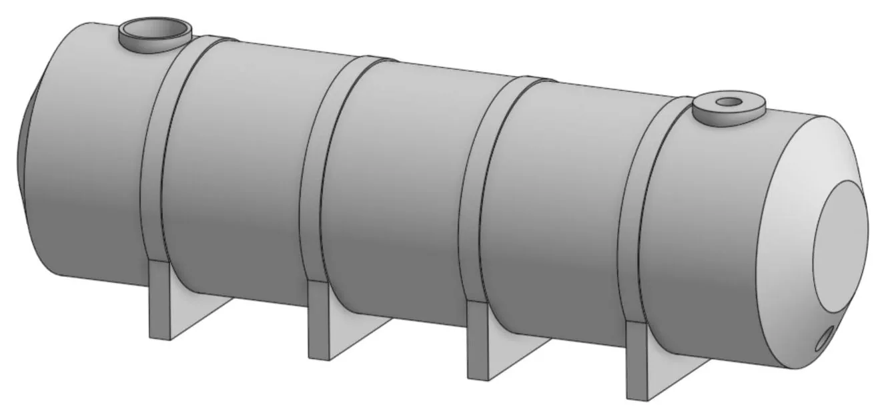
Semester log (RETAIN meeting slides)
| Meeting | Focus |
|---|---|
| 9/22 | Kickoff. Researched types of catchment tanks and systems. Open question: what is the minimum daily, weekly and monthly water requirement per household? |
| 9/29 | Tour of Nolop. Broke the tank problem into the design process: define the problem, brainstorm, and list considerations (size, materials, structure). |
| 10/6 | Wrote out tank design equations and used MAPS data on building sizes to estimate collected volumes. |
| 10/13 | Tank count and placement, altitude data for flow direction, failure modes, piping. |
| 10/20 | Debrief with Prof. Limbrunner. Started the daily mass-balance spreadsheet and simulation. Planned two tanks for different uses. |
| Late Oct | Semester goal set: two tanks for one big pavilion. Started the OnShape tank model. |
| 11/3–11/10 | Fed rainfall data into the simulation across storage sizes, analyzed 25 years of rainfall, and looked at strategies for long dry spells. |
| 11/17 | Split into component groups and began the detailed OnShape model. |
2026 Trip & Next Phase
On the 2026 trip the team documented the current state of the line and tanks, and construction work had started in the community.
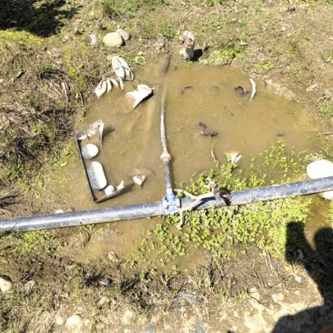
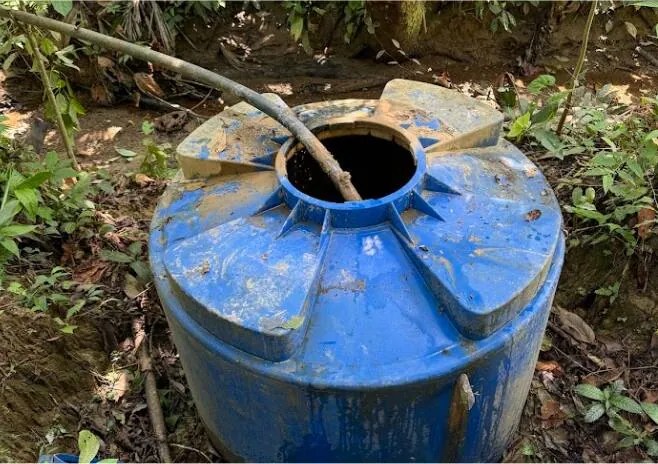
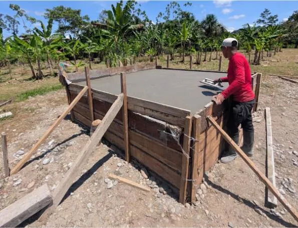
Contractor proposal: covered structure
Fundación Hombro a Hombro has contracted a local firm, AC Construcciones, to design a covered structure in the Tena canton. The latest proposal (dated 04/09/2026, subject to change) is a gable-roofed steel frame:
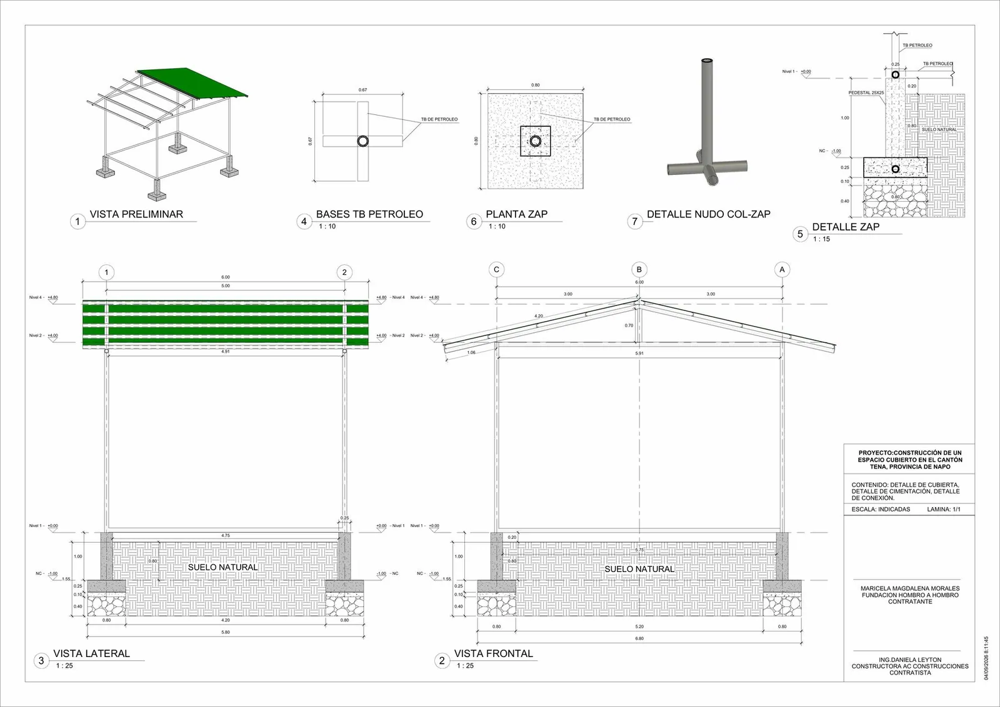
| Element | Specification |
|---|---|
| Plan (column grid) | 6.00 m (axes A–C, two 3.00 m bays) × 5.00 m (axes 1–2) |
| Heights | Eave +4.00 m, ridge +4.80 m |
| Roof | Gable, 4.20 m rafters with a 1.06 m overhang, ≈ 15° pitch (0.80 m rise over a 3.00 m run) |
| Columns | Recycled steel oil-well pipe (tubería de petróleo) with cross-pipe anchors at the base |
| Footings | 0.80 × 0.80 × 0.25 m pads at −1.00 m on a 0.10 m blinding layer and a 0.40 m stone bed, with 25 × 25 cm pedestals |
The proposed ≈15° roof pitch is almost exactly the slope we settled on for the spring prototype, which makes it a good test of whether our gutter and first-flush layout scales up.
What we found
- The source is not the bottleneck. Leaks, open hoses and missing treatment are. A supplemental system has to deliver clean water close to households, not just more water.
- Averages are misleading; dry spells size the tank. Monthly rainfall looks abundant, but the daily model shows multi-week gaps that no reasonable tank can fully bridge.
- Storage has diminishing returns. Past ~100 m³ for the pavilion, roof area and demand matter more than tank size.
- Filter media must be rinsed first. Unrinsed activated charcoal and gravel shed dust into the “clean” water.
- Some suspended sediment got through the geo-filter in testing, so we are looking at finer media and a possible spring box upstream.
- The first flush needs a real drain. Our prototype held water back with duct tape, and the next version needs a removable stop plug.
Reflections
This project taught me to build in a makerspace on a deadline, with drills, table and hand saws, hole saws, squares and caulk, and on a team whose members ranged from first-time builders to people who had done this before. Our materials were moved around in Nolop more than once, so we had to redo parts of the build. That made us plan ahead and meet outside regular EWB hours. We also learned to ask questions and get feedback early. And clamps are underrated.
The fall work showed me how much a model changes the conversation. A tank size that looks generous on monthly averages runs dry within days in a bad stretch. Being able to show that with a curve, rather than a guess, is what lets us bring the community a design with honest trade-offs.